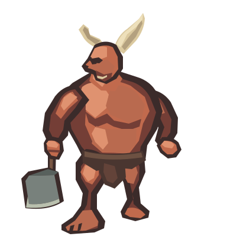
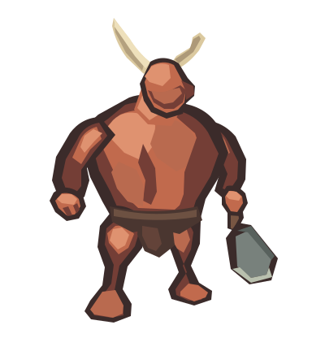
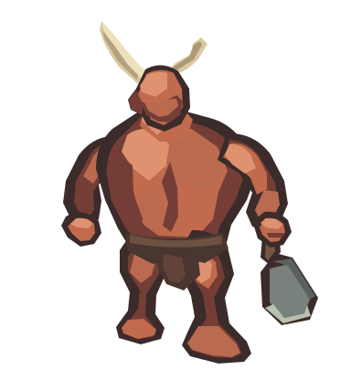
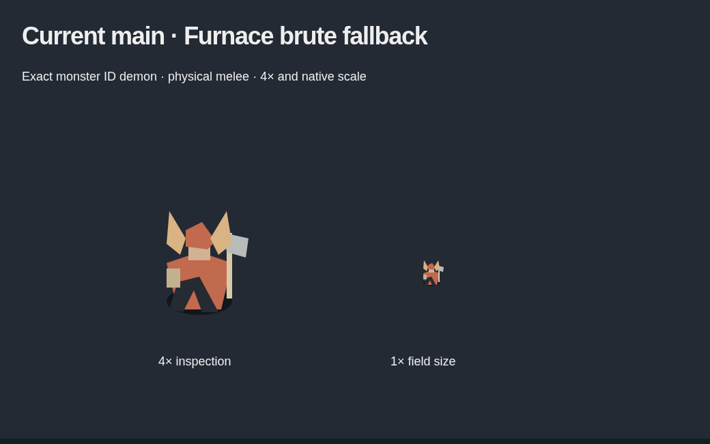
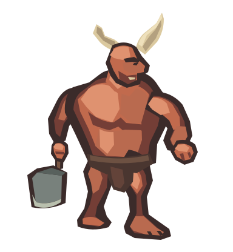

1× target · inferno32px · crypt
1× target · inferno32px · crypt
1× target · inferno
32px · crypt


1× target · inferno
32px · crypt


1× target · inferno
32px · crypt
Four assistant-authored native SVG quarters. Rust-red physical melee, unequal ivory horns and a plain right-hand cleaver. The requested image API call ended with an unknown transport outcome; no model artwork was returned. These drawings were authored separately after that interruption.
Enlarged inspection above; below, the same 0.1 source scale on an inferno-colored 32px square grid and a tighter 32px-wide canvas on crypt gray. Visible native bounds: 27.1–28.1×37.4–37.5px. No contact shadows or terrain are baked into the vectors.
1× target · inferno32px · crypt


The generic body has equal horn triangles and a long-haft weapon. This capture includes the renderer-owned shadow; the new isolated SVGs do not supply shadows. No game renderer or monster ID is changed by this study.

The first SE construction remains exact. The current SE strengthens calf/ankle support before the other quarters were authored. Other directions were independently redrawn with consistent proportions, gear and screen-upper-left light, not mirrored.

Combined manual source sheet · Staged lineage · Review and origin · Validation
Grant sprite-brute-03 dispatched once at 2026-11-06T16:23:55 UTC. RemoteDisconnected after 301.04 seconds; no returned artwork, usage, HTTP response or request ID. Full US$3 retained, zero released. No paid retry or new request. Manual drawing made no additional image API call; it does not settle that request.
Exact sent prompt/settings · Unknown outcome receipt · Bound and retained reservation